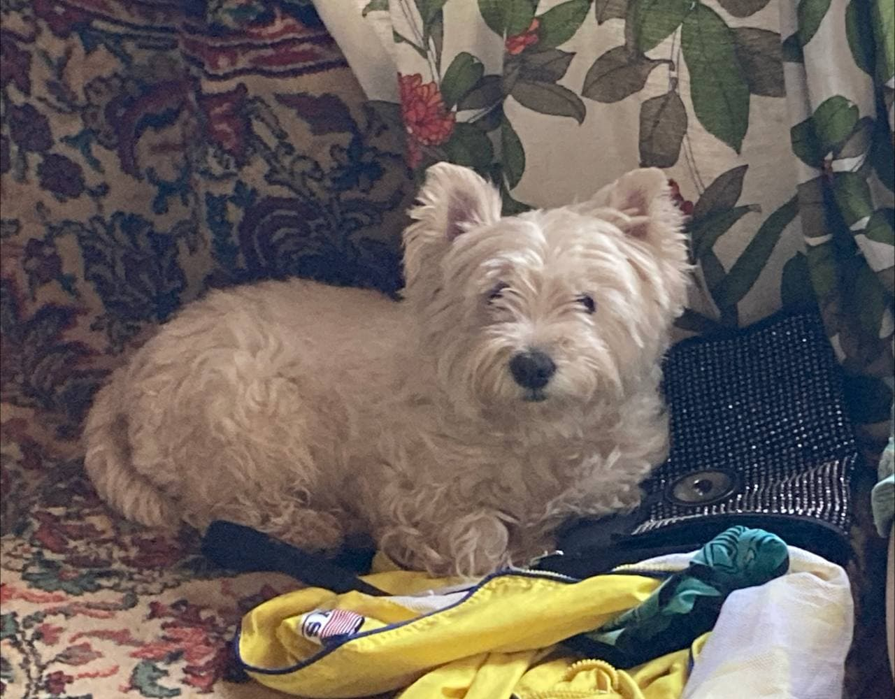
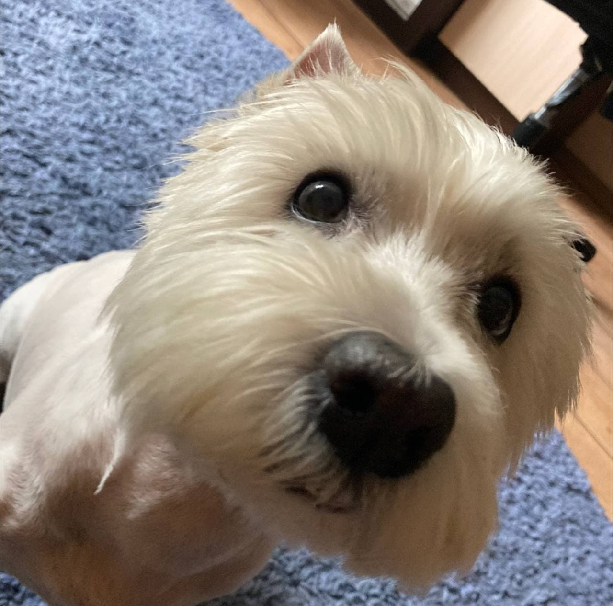

В общем, половину лета я сдавал сессию, проходил практику и всё такое. После чего я уехал к себе домой, в свой родной город Лиду. Там оставшуюся часть лета я занимался спортом, вкусно и правильно кушал, ездил на дачу к своим бабушке с дедушкой и собаке Марте (на фото она), учился водить и просто отдыхал от учёбы. <a href="https://www.google.by/"> Ссылка на гугл :)</a>
Cледующее фото Марты - оригинальная ссылка
А это - ссылка на 5 задание (исправленный вариант)
